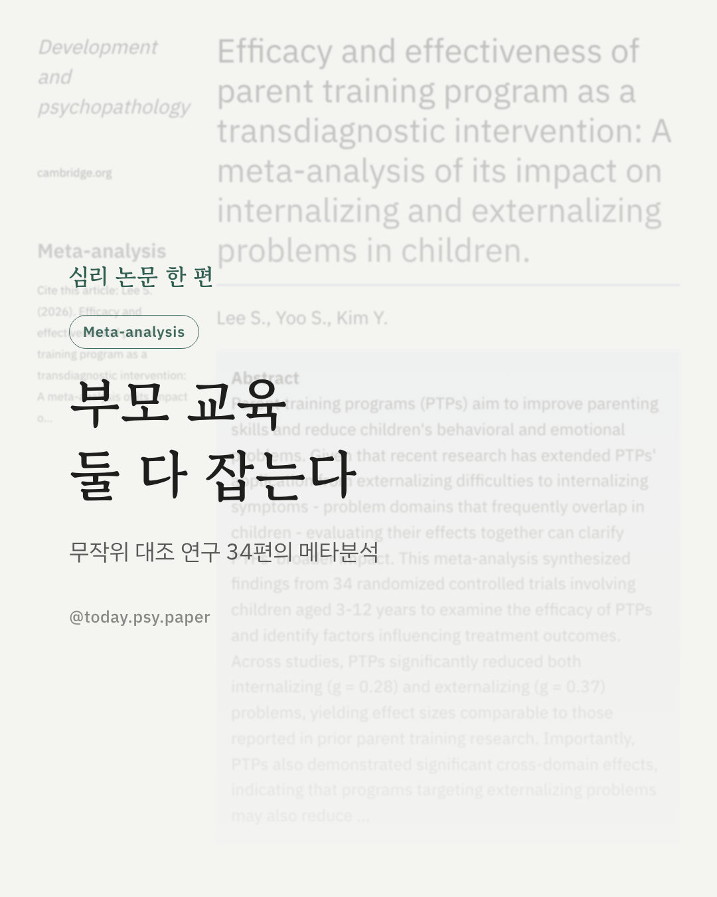
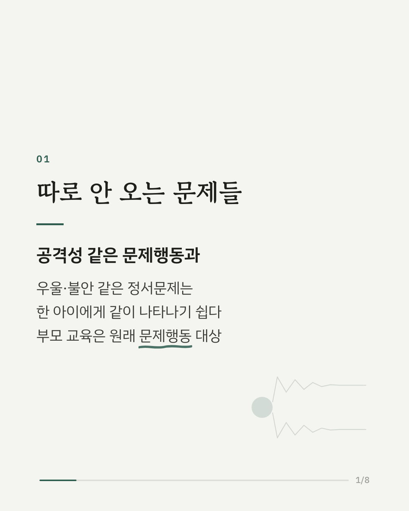
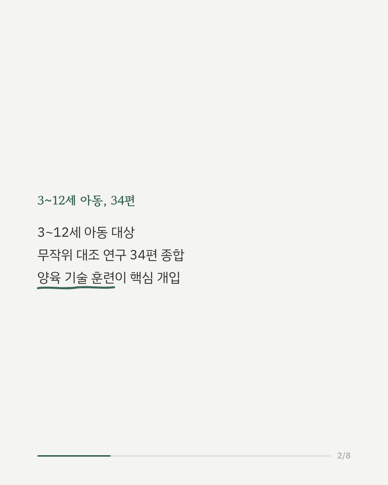
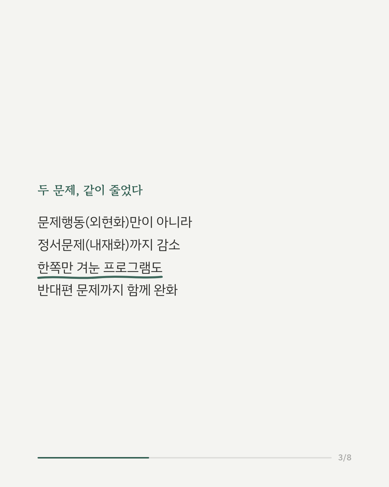
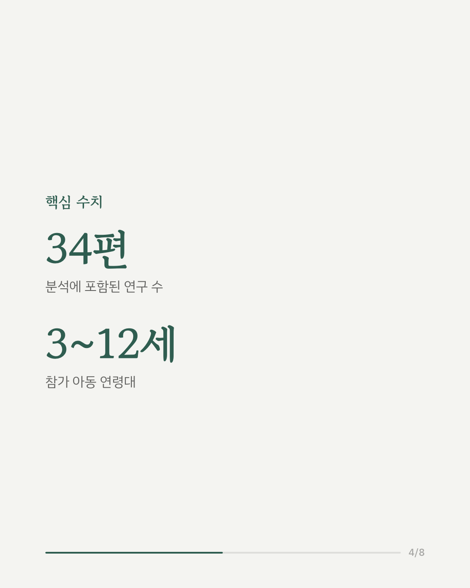
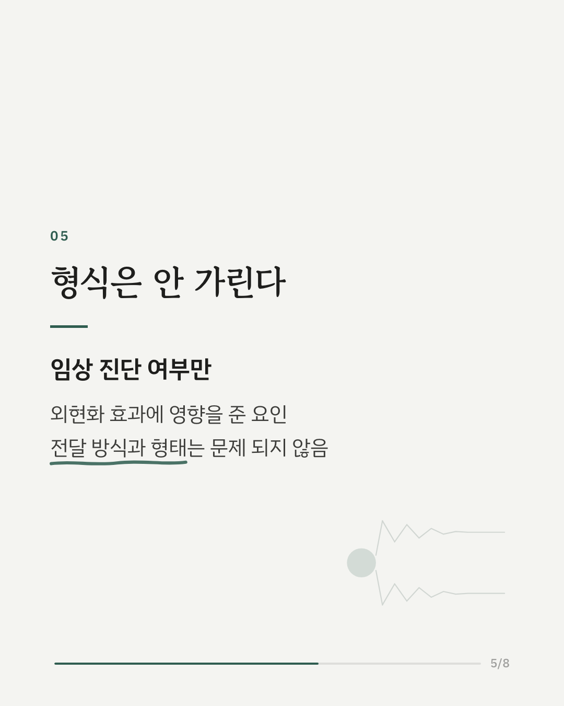
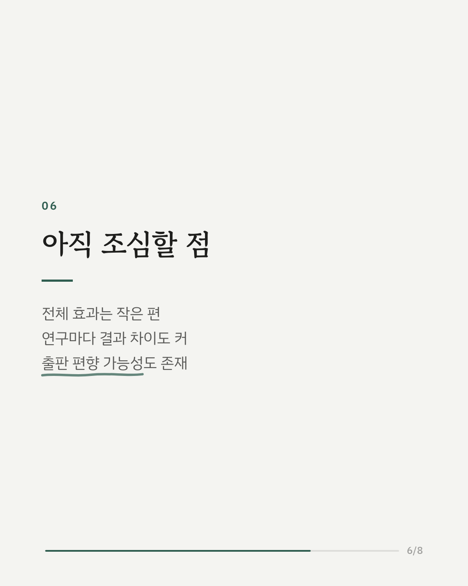
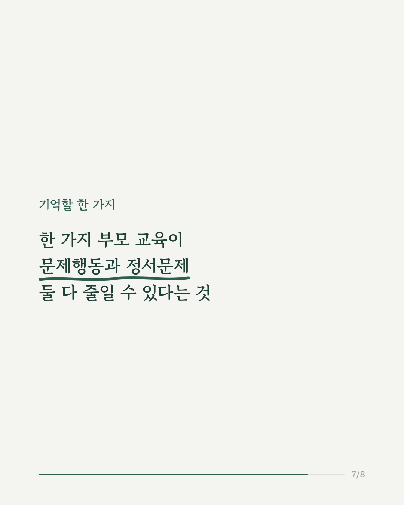
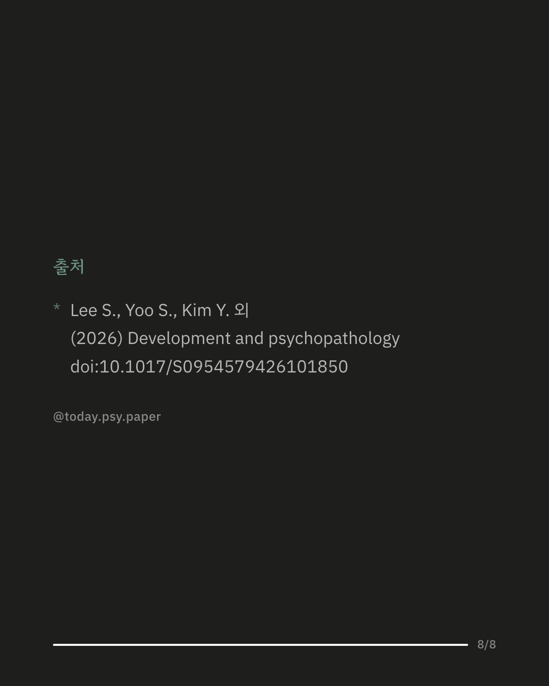

아이의 문제행동과 우울·불안 같은 정서문제는 따로 오지 않고 함께 나타나는 경우가 많습니다. 부모의 양육 방식을 바꾸는 부모 교육 프로그램은 원래 문제행동 개선을 목표로 만들어졌지만, 최근에는 정서문제까지 다루는 방향으로 확장되고 있습니다. 이번 메타분석은 3~12세 아동을 대상으로 한 무작위 대조 연구 34편을 모아 그 효과를 함께 살펴봤습니다. 분석 결과, 부모 교육 프로그램은 문제행동과 정서문제를 모두 유의하게 줄였습니다. 특히 눈에 띈 부분은 한쪽 문제만을 겨냥해 만들어진 프로그램도 반대편 문제까지 함께 완화하는 교차 효과가 나타났다는 점입니다. 프로그램이 진행되는 형식이나 방식은 결과에 큰 영향을 주지 않았고, 아동이 임상적으로 진단을 받았는지 여부만이 문제행동 개선 정도를 예측했습니다. 이는 부모 교육이 하나의 문제에만 매달리지 않고 비교적 유연한 방식으로 활용될 수 있음을 보여줍니다. 다만 전체적인 효과 크기는 작은 편이었고, 연구들 간 결과 차이도 크게 나타나 해석에는 주의가 필요합니다. Development and Psychopathology (2026), 'Efficacy and effectiveness of parent training program as a transdiagnostic intervention: A meta-analysis of its impact on internalizing and externalizing problems in children' DOI: 10.1017/S0954579426101850 #부모교육 #양육심리 #아동심리 #심리학연구 #문제행동 #육아고민 #아동정서 #양육코칭
python3 publish.py 42768792